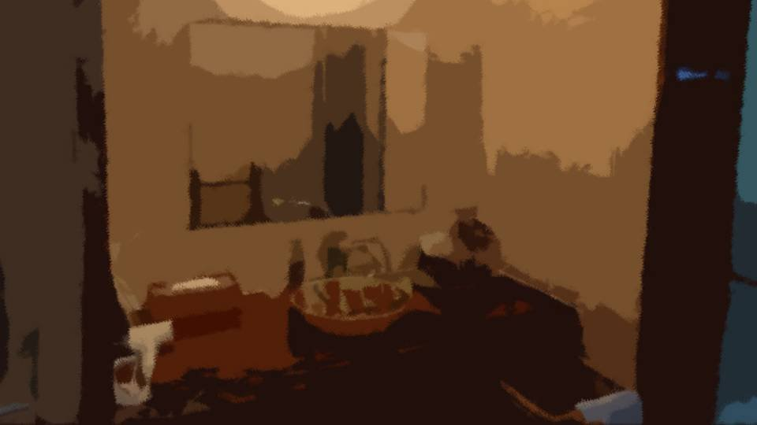
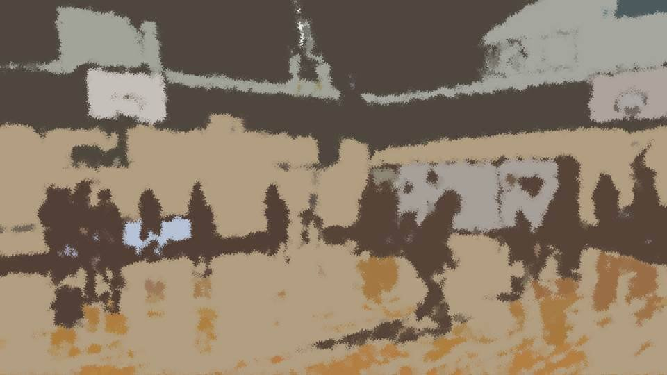

This scene is not unlocked yet in your progress
Shigatsu Youka ~Vanity~

I was supposed to go to the kitchen and help get dinner ready.
But now I was standing face to face with the mirror in the washroom.
There's no particular reason for it, but whenever I face a mirror, I have a habit of letting out a big sigh.
But now I was standing face to face with the mirror in the washroom.
There's no particular reason for it, but whenever I face a mirror, I have a habit of letting out a big sigh.
But today, no sigh came out.
The me in the mirror... what is she looking at?
And I... what am I looking at, in the mirror?
Facing the reflection that looked exactly like me, I asked it in my heart.
The me in the mirror... what is she looking at?
And I... what am I looking at, in the mirror?
Facing the reflection that looked exactly like me, I asked it in my heart.
That was when I noticed.
The reflection in the mirror was shedding tears.
From one eye only, a drop slid smoothly down her cheek, like water running down glass.
I put a hand to my own face and stroked it.
A faint coolness.
Sure enough, I had been crying too.
The reflection in the mirror was shedding tears.
From one eye only, a drop slid smoothly down her cheek, like water running down glass.
I put a hand to my own face and stroked it.
A faint coolness.
Sure enough, I had been crying too.
The me in the mirror was my own self.
The moment I clearly realized that, the strength left me and I sank to my hands and knees on the floor.
I hung my head, and more tears spilled from my eyes.
But no sound came out.
The me in the mirror felt sad, and I was only empathizing with her.
It was that kind of strange sensation.
The moment I clearly realized that, the strength left me and I sank to my hands and knees on the floor.
I hung my head, and more tears spilled from my eyes.
But no sound came out.
The me in the mirror felt sad, and I was only empathizing with her.
It was that kind of strange sensation.
Why is the me in the mirror crying?
I don't know the reason.
But... But the me in the mirror knows.
I don't know the reason.
But... But the me in the mirror knows.
I've been holding it in all this time.
Pushing myself.
Since when have I been holding it in like this?
Pushing myself.
Since when have I been holding it in like this?

What I remember clearly is from middle school.
Back then, I wanted a starting spot in my club so badly that I practiced desperately every day.
Haruka and Goto both supported me.
Little by little, steadily, I got better―
Back then, I wanted a starting spot in my club so badly that I practiced desperately every day.
Haruka and Goto both supported me.
Little by little, steadily, I got better―
In the spring of my third year of middle school, I won a starting spot.
Haruka and Goto were both happy for me.
I told myself I'd work even harder, for the sake of the people who'd supported me this far.
Even after I became a starter, I never slacked off, and I kept honing my skills.
But―
Haruka and Goto were both happy for me.
I told myself I'd work even harder, for the sake of the people who'd supported me this far.
Even after I became a starter, I never slacked off, and I kept honing my skills.
But―
We lost the third-place match at the prefectural tournament in July, and we third-years retired.
That was the first time I felt it.
What had I been doing?
No matter that I'd become a starter, no matter how much better I'd gotten...
All the effort I'd piled up could be reduced to nothing, every bit of it, by a single moment.
That was the first time I felt it.
What had I been doing?
No matter that I'd become a starter, no matter how much better I'd gotten...
All the effort I'd piled up could be reduced to nothing, every bit of it, by a single moment.
I knew it was a selfish way to think.
I could never say anything like that to Haruka or Goto.
When it was thanks to the two of them that I'd made it this far...
So I kept it hidden, all this time.
I lied to myself, too.
I just endured, and endured.
I could never say anything like that to Haruka or Goto.
When it was thanks to the two of them that I'd made it this far...
So I kept it hidden, all this time.
I lied to myself, too.
I just endured, and endured.

Today is the same.
The truth is, I wanted to run back home to Motoki-cho.
My intuition told me Motoki-cho was going to disappear.
But what if I think only about myself?
Like back when Haruka moved to Megasawa, all I'd have to do is move somewhere else too.
The truth is, I wanted to run back home to Motoki-cho.
My intuition told me Motoki-cho was going to disappear.
But what if I think only about myself?
Like back when Haruka moved to Megasawa, all I'd have to do is move somewhere else too.
Because... because it's true, isn't it?
Moving somewhere else, or going to Arata―which is safer?
Isn't the answer perfectly obvious...?
Why didn't I say back then that I wanted to run away?
Moving somewhere else, or going to Arata―which is safer?
Isn't the answer perfectly obvious...?
Why didn't I say back then that I wanted to run away?
Haruka said it.
When I have the power of Necro, is there anywhere I could even run to?
So rather than going back to Motoki-cho, it's more constructive to face Necro here and find a way to solve this.
I know that much...!
But is there any guarantee it'll work!? Any guarantee I'll get home safe!?
There's no guarantee like that anywhere...!
When I have the power of Necro, is there anywhere I could even run to?
So rather than going back to Motoki-cho, it's more constructive to face Necro here and find a way to solve this.
I know that much...!
But is there any guarantee it'll work!? Any guarantee I'll get home safe!?
There's no guarantee like that anywhere...!
All I can do is resent this power of mine.
If I didn't have this power, Necro wouldn't be glaring at me.
And I could have just gone home to Motoki-cho, couldn't I?
Over and over in my heart, I repeat complaints it's far too late to do anything about.
If I didn't have this power, Necro wouldn't be glaring at me.
And I could have just gone home to Motoki-cho, couldn't I?
Over and over in my heart, I repeat complaints it's far too late to do anything about.
In front of everyone, I make a point of acting strong.
Because I don't want to see everyone looking worried.
Rather than see that, I should just force a smile, even if it's a strain.
I just have to say something that'll make people feel even a little more hopeful.
If I just... push myself a little and hold it in, that's all.
Because I don't want to see everyone looking worried.
Rather than see that, I should just force a smile, even if it's a strain.
I just have to say something that'll make people feel even a little more hopeful.
If I just... push myself a little and hold it in, that's all.
I'm a coward.
I say things to look cool, while inside I let grudges like these pour out.
The me in the mirror got tired of holding it in, and showed me what was in her heart.
The me in the mirror is my own self― and she's forced me to see the inside of me I don't want to see.
That's why my tears won't stop.
I say things to look cool, while inside I let grudges like these pour out.
The me in the mirror got tired of holding it in, and showed me what was in her heart.
The me in the mirror is my own self― and she's forced me to see the inside of me I don't want to see.
That's why my tears won't stop.
I'm scared... I'm scared...!
I want to run home right now...!
Whatever happens to the Arata settlement, it's got nothing to do with me...!
They can't find Chiga-nee!? I've never even met her!
Why do I have to be dragged into this...!
I want to run home right now...!
Whatever happens to the Arata settlement, it's got nothing to do with me...!
They can't find Chiga-nee!? I've never even met her!
Why do I have to be dragged into this...!
This is how I really feel.
This is what's inside my cowardly heart.
What do I do! What do I do to make it out of this...!
This is what's inside my cowardly heart.
What do I do! What do I do to make it out of this...!
The feeling of something stroking my back.
Something gentle, warm and soothing was softly stroking my back as I knelt with my head bowed.
Something gentle, warm and soothing was softly stroking my back as I knelt with my head bowed.

It was Haruka's grandmother.
I'd heard about her.
For 10 years she had been trying to prevent the curse-killings, and still she could see no lead toward solving them.
Obaasan stroked my back without saying a word.
I'd heard about her.
For 10 years she had been trying to prevent the curse-killings, and still she could see no lead toward solving them.
Obaasan stroked my back without saying a word.
"I'm sorry, I'm all right..."
I lifted my head, wiped my tears, and pulled my mouth into a smile.
See, I lied again.
There was no way I was all right. All I wanted was to run away.
I lifted my head, wiped my tears, and pulled my mouth into a smile.
See, I lied again.
There was no way I was all right. All I wanted was to run away.
"Natsumi-chan... I'm glad you came.
That alone makes me happy enough."
That was the first conversation I ever had with Obaasan.
And yet Obaasan seemed to understand everything inside me.
The strength drained from my whole body once more, and the tears started welling up again.
All I could do was lean against Obaasan.
That was the first conversation I ever had with Obaasan.
And yet Obaasan seemed to understand everything inside me.
The strength drained from my whole body once more, and the tears started welling up again.
All I could do was lean against Obaasan.
Obaasan stayed still, stroking my head, her hand on my back.
"Haruka and the others went out a while ago, so it's just me in the house."
Hearing that, I finally let go of my voice, too.
Even at this point, had I still been holding back from crying out loud?
Just how much of a coward am I, always trying to hide myself?
"Haruka and the others went out a while ago, so it's just me in the house."
Hearing that, I finally let go of my voice, too.
Even at this point, had I still been holding back from crying out loud?
Just how much of a coward am I, always trying to hide myself?
My body was seized by sobs so hard I couldn't control my breathing, and I shook all over.
Crying wasn't going to solve anything.
But holding it in wasn't going to solve anything either.
So right then, I gave myself over to what I wanted to do.
And that was wailing―crying out loud, unsightly as it was.
Crying wasn't going to solve anything.
But holding it in wasn't going to solve anything either.
So right then, I gave myself over to what I wanted to do.
And that was wailing―crying out loud, unsightly as it was.
Obaasan must be terribly afraid too, living in a place like this for 10 years.
But whether it's because of her position as the Grand Witch, or because she loves this land― Obaasan endures here in the Arata settlement, quietly.
Obaasan must want to run away too, if she could.
Obaasan must be far more afraid than I am.
I know that.
But whether it's because of her position as the Grand Witch, or because she loves this land― Obaasan endures here in the Arata settlement, quietly.
Obaasan must want to run away too, if she could.
Obaasan must be far more afraid than I am.
I know that.
But I clung to her selfishly, like a little child.
We both wanted to run away, and yet I cried selfishly, as if to say I was the one to be pitied.
And Obaasan quietly took it all in.
We both wanted to run away, and yet I cried selfishly, as if to say I was the one to be pitied.
And Obaasan quietly took it all in.
Little by little, that turned into a feeling of shame.
Wailing on the shoulder of someone I'd only just met.
Leaning on someone who'd been through more fear than me.
Realizing this cowardly side of myself.
Wailing on the shoulder of someone I'd only just met.
Leaning on someone who'd been through more fear than me.
Realizing this cowardly side of myself.
"Obaasan... I'm sorry..."
The words slipped out without my meaning them to.
From a mouth that was about to say 'I want to run away,' words of apology came out on their own.
The words slipped out without my meaning them to.
From a mouth that was about to say 'I want to run away,' words of apology came out on their own.
"Natsumi-chan, there's no need to worry.
I'll send you home safe and sound, I promise."
How to take those words is different for everyone.
Some would think it's a stock phrase to make a crying person stop crying.
Others would think it is not something the head of a settlement where someone is killed every year should say.
What I felt was neither of those.
How to take those words is different for everyone.
Some would think it's a stock phrase to make a crying person stop crying.
Others would think it is not something the head of a settlement where someone is killed every year should say.
What I felt was neither of those.
What I felt was empathy.
Obaasan has a hometown besides this place.
Even so, there are circumstances that force her to stay here.
Obaasan has a hometown besides this place.
Even so, there are circumstances that force her to stay here.
Those words: "I'll send you home."
With those words, I thought: here is someone who understands how an outsider feels―something a person born and raised here could never know.
With those words, I thought: here is someone who understands how an outsider feels―something a person born and raised here could never know.
"Obaasan... you're not from this settlement originally?"
"Hm? You think so? That's right. I moved here when I married in."
How much peace of mind there is in going home to a house that isn't here.
I felt she understood that.
"Hm? You think so? That's right. I moved here when I married in."
How much peace of mind there is in going home to a house that isn't here.
I felt she understood that.
"You see, when I married my husband, I made up my mind. Whatever happens, I'll protect this land to the end.
And that goes for the people who live in this land, of course, and for any guests who come here, too.
It's 10 years now and I still haven't solved it, which is shameful... but even so, my feelings haven't changed."
"Obaasan, you're amazing... I'm just scared, that's all..."
"Obaasan, you're amazing... I'm just scared, that's all..."
"Of course you're scared. Without fear, you'll just do something reckless and fail.
You'll be all right, as long as you feel scared."
"But it's hard for me to tell everyone I'm scared... I can't tell them now that I forced myself and acted tough just to come here..."
"But it's hard for me to tell everyone I'm scared... I can't tell them now that I forced myself and acted tough just to come here..."
"Haruka and Mifuyu-san must both know at least how you really feel.
You're always trying so hard not to make anyone worry, and they're bound to know it."
When I heard that, it hit me.
At last I understood what I had been afraid of.
It went without saying that I felt my life was in danger in this frightening place.
When I heard that, it hit me.
At last I understood what I had been afraid of.
It went without saying that I felt my life was in danger in this frightening place.
But that wasn't all.
When I thought I'd have to keep holding it in, pushing myself, putting on a brave face from now on, forever, I felt like I might break.
How long would I have to keep hiding my cowardly feelings to go on living?
I'd started to grow tired of it.
When I thought I'd have to keep holding it in, pushing myself, putting on a brave face from now on, forever, I felt like I might break.
How long would I have to keep hiding my cowardly feelings to go on living?
I'd started to grow tired of it.
I'm not... as strong a person as everyone thinks.
I'm a more cowardly person than anyone imagines.
I'm a more cowardly person than anyone imagines.
"Obaasan, I'm... I'm sure I'm a really weak person."
"I hear it from Haruka all the time, that she has a precious friend she's had since the day she was born. But that girl pushes herself too hard sometimes, so she worries about her. Be brave and tell Haruka and the others just what you've been feeling. Then not just you, but Haruka and the others will feel lighter too."
"I hear it from Haruka all the time, that she has a precious friend she's had since the day she was born. But that girl pushes herself too hard sometimes, so she worries about her. Be brave and tell Haruka and the others just what you've been feeling. Then not just you, but Haruka and the others will feel lighter too."
"Will it be okay...?"
"What if you were in the opposite position?
If Haruka opened up to you about what she'd been hiding in her heart all along, how would you feel?"
"I don't really understand, but... I'd be happy, maybe... Thinking she must have told me because she trusted me."
"I don't really understand, but... I'd be happy, maybe... Thinking she must have told me because she trusted me."

"Then there's nothing left to worry about!"
Obaasan laid her hand on my shoulder with a pat.
To someone I'd met for the first time today, I had confessed what I'd never told anyone, and been given an answer.
It didn't change the fact that I was still scared.
But at the same time, I felt reassured.
Obaasan laid her hand on my shoulder with a pat.
To someone I'd met for the first time today, I had confessed what I'd never told anyone, and been given an answer.
It didn't change the fact that I was still scared.
But at the same time, I felt reassured.
"Thank you, Obaasan. I'm really okay now!
Haruka and the others went off to investigate, so I'll help with dinner!"
"Heh heh, so Haruka and the others were sneaking around looking into the curse-killings after all."
"Ah...!"
It was supposed to be a secret, but I'd let it slip.
"Heh heh, so Haruka and the others were sneaking around looking into the curse-killings after all."
"Ah...!"
It was supposed to be a secret, but I'd let it slip.
"Well, right now, even one more ally is a comfort.
Haruka and the others will be back, so we'd better have a dinner ready that'll put some life back in them!"
"Okay!"
Taking Obaasan's hand, I got briskly to my feet.
Was it because I'd cried so much, or because someone had listened to me?
I felt wonderfully refreshed.
"Okay!"
Taking Obaasan's hand, I got briskly to my feet.
Was it because I'd cried so much, or because someone had listened to me?
I felt wonderfully refreshed.
"Haruka has such a wonderful grandmother!"
"Heh heh, though Haruka tells me, 'Act your age already, you cosplay hag!'"
"Cosplay...?"
"Well, I'll show you what that's about once dinner's done."
Deep in Obaasan's eyes, something seemed to glint with a mysterious light.
"Heh heh, though Haruka tells me, 'Act your age already, you cosplay hag!'"
"Cosplay...?"
"Well, I'll show you what that's about once dinner's done."
Deep in Obaasan's eyes, something seemed to glint with a mysterious light.